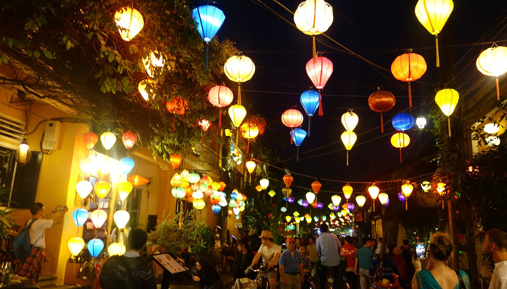

I live in Da Nang, which means I've done the 45-minute drive down to Hoi An more times than I can count, for dinner, for day trips, for friends visiting from the US. This isn't a travel blog write-up.
It's what I'd tell a friend who's flying into Da Nang and asking whether Hoi An is worth a night or two. (It is. Here's why and how to do it right.)
The Reality Check: What Hoi An Is (and Isn't)
Hoi An is one of the most photogenic places in Southeast Asia. That's not hype, the Ancient Town's lantern-lit streets, yellow-walled merchant houses, and Japanese Covered Bridge are genuinely beautiful, and the scale of it all still surprises people who show up thinking it'll be a few blocks.
The town has been remarkably well preserved and, unlike a lot of "heritage" attractions in Vietnam, it actually feels lived-in.
What the Instagram photos don't show you: it's also heavily touristed and priced accordingly. The main strip through the Ancient Town, Tran Phu and Nguyen Thai Hoc, is essentially a tourist corridor.
Restaurants charge two to four times what you'd pay in Da Nang for equivalent food. Tailoring shops, lantern stalls, and tour operators are everywhere.
In peak season (June–August and Chinese New Year), the narrow streets fill to the point where the experience starts to feel claustrophobic.
None of that is a reason to skip it. It just means you need to know when to go, where to eat, and how to get out of the bubble.
Flood risk is real: The Ancient Town sits directly on the Thu Bon River and floods during typhoon season (October–November). Streets can go knee-deep in water, it's not a myth, it happens almost every year.
Some guesthouses post flood photos on their walls as décor. If you're visiting in October, check weather and have a flexible itinerary.
Getting to Hoi An
Hoi An doesn't have its own airport. You fly into Da Nang International Airport (DAD) and travel from there.
This is important to know because a lot of first-time visitors assume they'll arrive directly, they won't.
From Da Nang Airport
The most straightforward option is a private transfer. Every hotel in Hoi An offers airport pickup, and fixed-rate services run around $15–25 USD for the 45-minute trip.
Book through your hotel or use a reputable transfer service, it's worth it on arrival when you have luggage and don't want to negotiate.
Grab (Vietnam's Uber) works from Da Nang Airport to Hoi An. Expect to pay around 200,000–300,000 VND ($8–12 USD) depending on time of day.
The app handles payment so there's no haggling, though surge pricing applies during busy periods.
Local buses run between Da Nang and Hoi An for about 30,000 VND. They're fine if you're backpacking and have time, but the stops aren't convenient from the airport and you'll likely need a second Grab at the other end.
From Da Nang City
If you're staying in Da Nang and doing a day trip or overnight, a Grab from My Khe Beach runs around 150,000–220,000 VND. Hiring a motorbike taxi (xe om) is cheaper but requires more negotiation.
The drive follows the coast and passes through some genuinely beautiful scenery, take the coastal road rather than the highway if you have time.
Motorbike rental: Renting a semi-automatic and riding yourself is around $5–8/day and gives you freedom the ancient town deserves. The 30km ride from Da Nang on the coastal road is one of the better drives in Central Vietnam.
Just know Vietnamese traffic rules are more suggestion than law, and the tourist spots in Hoi An's surroundings (rice paddies, An Bang Beach) are best explored at your own pace.

Where to Stay in Hoi An
Hoi An's accommodation breaks into three main zones. Where you stay depends entirely on what you're optimizing for.

Ancient Town & Surrounds
Boutique guesthouses and small hotels inside or directly adjacent to the UNESCO zone. You're walking distance to everything at night, but rooms are typically smaller and you're paying a location premium.

An Bang Beach
10 minutes from the Ancient Town by bicycle or motorbike, An Bang is quieter than Da Nang's My Khe and has a laid-back beachside village feel. Boutique resorts and beach bar restaurants.
Some of the best food in the Hoi An area is out here.

Resort Strip (Cua Dai Road)
The stretch between the Ancient Town and the coast has several of Vietnam's best resort properties, Four Seasons, Anantara, Victoria, with massive pools, private beach access, and full spa facilities. You're a shuttle ride from the town.
A note on pricing: Hoi An hotels run 30–50% higher than equivalent properties in Da Nang. A clean mid-range room near the Ancient Town that would cost $60 in Da Nang will likely cost $85–100 here.
Factor that into your budget, especially if you're splitting time between both cities.
See our full Hoi An hotel guide with curated picks at every price point →
The Ancient Town: What to Actually Do
The Ancient Town ticket (120,000 VND, about $5) gets you into five designated heritage sites from a list of about 20 options, you pick which ones. Buy it from the booths outside the pedestrian zone before you enter.
You don't need the ticket to walk the streets, eat, or shop, just to enter the specific sites.
Recommended sites with the ticket:
The real Hoi An is outside the ticket zone: The streets that aren't on the heritage trail, the alleyways heading north toward Cam Pho, the backstreet area around Bach Dang along the river, the morning market on Tran Quy Cap, are where you get the authentic version of the town. The locals who actually live here are in those neighborhoods, not on Tran Phu Street selling you lanterns.

What to Eat in Hoi An
Hoi An has legitimate claims to some of Vietnam's best regional dishes. Central Vietnamese food is notably different from Hanoi or Saigon, richer, spicier, and more complex.
The three dishes you absolutely need to eat here:
Where to eat without getting taken
The restaurants directly on Tran Phu and Nguyen Thai Hoc, the main tourist drags, are mostly fine but overpriced. Push one or two blocks off the main roads and prices drop noticeably.
An Bang Beach has some of the best casual dining in the whole area: Mango Mango, Secret Garden, and the beachside fish restaurants are all genuinely good and not gouging you on the account of the address.
For Vietnamese food at local prices, the morning market (chợ) on Tran Quy Cap Street operates from about 5am to 11am and is where actual locals eat. Pho, bánh mì, and fresh fruit at Vietnamese prices, not tourist prices.
Cooking classes: Hoi An is famous for its cooking classes and most are genuinely good, the format typically involves a market tour in the morning followed by hands-on cooking of 4–5 dishes. Red Bridge Cooking School and Morning Glory are both well-run.
Expect to pay $35–55 USD for a half-day class. Skip the ones that involve an upfront bargaining interaction on the street.
"First-timers in Hoi An should arrive in the afternoon, walk the Ancient Town at dusk before the tour groups, eat at a local place on the riverside, and book the lantern-making workshop for the next morning. That's how you see Hoi An instead of just passing through it."
Getting Around
The Ancient Town is pedestrianized between 7am and 9pm, which means no motorbikes in the core zone during those hours. This is actually a pleasure, you can walk freely without the usual Vietnamese traffic reality.
Bicycle
The whole Hoi An area, Ancient Town, An Bang Beach, the rice paddies, the market, is flat and easy on a bicycle. Rentals are around 50,000–80,000 VND per day from most guesthouses.
This is the best way to experience the town and the best transport investment you'll make here. The coastal road from An Bang to Cua Dai is a particularly good ride.
Motorbike
Semi-automatic rentals run $5–8/day from countless shops. You'll need this if you're heading to My Son Sanctuary (45 minutes) or exploring further afield.
Can't drive? Xe om (motorbike taxi) drivers are available everywhere and have fixed routes for major attractions.
Grab
Works fine in Hoi An for longer distances or when it's too hot to pedal. Less common than in Da Nang, drivers sometimes take a few extra minutes to accept trips in the Ancient Town zone specifically, but it's still the most reliable option.
The boat trips: You'll be approached constantly by women in traditional dress offering boat rides on the Thu Bon River for lantern floating. The price is negotiable and starts high.
The experience itself, releasing a paper lantern on the river at night, is genuinely nice and not something you should feel embarrassed about doing once. Just negotiate the price before boarding.
Weather: When to Go
| Period | Weather | Crowds | Verdict |
|---|---|---|---|
| Jan – Feb | Warm (22–27°C), occasional rain, Tết fireworks | High around Tết | Good, festive atmosphere, manageable crowds |
| Mar – May | Hot and dry (26–34°C), very little rain | Low–Medium | ✓ Best for first-timers |
| Jun – Aug | Very hot (33–38°C), humid, minimal rain | Very high (Vietnamese domestic peak) | Hot and crowded, not ideal |
| Sep | Hot, humidity rising, end of dry season | Medium | Good value, shoulder season |
| Oct – Nov | Heavy rain (200–400mm/month), flooding possible | Low | ⚠ Typhoon season, check forecasts |
| Dec | Cooler (20–26°C), mostly dry | High (Western Christmas) | Pleasant, best atmosphere but prices spike |
The single biggest practical point: Hoi An's Ancient Town floods. Not hypothetically, it floods almost every year in October and November when typhoons hit the coast.
The Thu Bon River rises and the streets at the river's edge can take knee-to-waist-deep water. If you're there in those months, watch the weather, and note that some hotels have been through so many floods they've adapted logistics to manage it (ground floor check-in, second floor rooms).
It's not a dealbreaker but it is something to factor in.
Safety and What to Watch For
Hoi An is extremely safe for tourists. Violent crime is essentially non-existent.
The issues that come up are predictable:
Should You Base Yourself in Hoi An or Da Nang?
This is the question I get asked most often by people visiting the region for the first time. Here's the honest answer:
| Hoi An | Da Nang | |
|---|---|---|
| Atmosphere | Historic, romantic, walkable | Modern, liveable, convenient |
| Beach | An Bang Beach (30 min) | My Khe Beach (walking distance) |
| Hotel prices | Higher | Lower for equivalent quality |
| Food scene | More famous, pricier | Broader, better value |
| Airport access | 45 min from Da Nang airport | 15 min from Da Nang airport |
| Nightlife | Subdued, closes early | More options, later hours |
| Getting around | Bicycle ideal in town | Grab or motorbike |
My take: If you have 4+ days in the region, split your time, 2 nights in Da Nang (beach, Ba Na Hills day trip) and 2 nights in Hoi An (Ancient Town, An Bang Beach). If you only have 2–3 nights total, base in Da Nang for the airport convenience and do Hoi An as a day trip or overnight.
If you're purely there for the charm and historic atmosphere and don't care about nightlife or modern amenities, just stay in Hoi An. It rewards that choice.
Read our Da Nang First-Timer's Guide →

Practical Details
Visas
Most visitors enter Vietnam on an e-visa (90 days, $25 USD, apply at immigration.gov.vn). Citizens of a handful of countries get visa-free entry for 30–45 days.
Don't use third-party visa services, the official government site is the only one you need. Check current visa rules for your nationality before you travel, as the exemption list changes.
Cash and Currency
The Vietnamese Dong (VND) is the currency. Hoi An runs on cash more than Da Nang, smaller restaurants, market stalls, xe om drivers, and boat operators don't take cards.
ATMs are everywhere in the town. Withdraw in larger amounts (3–5 million VND at a time) to minimize fees.
Current rate: approximately 25,000 VND per USD, though this fluctuates.
SIM Card / Internet
Get a Vietnamese SIM at Da Nang Airport arrivals, Viettel and Vietnamobile both have counters. A 30-day data plan runs around 100,000–200,000 VND.
Don't bother roaming on your home plan. Alternatively, set up an eSIM before you fly in, Airalo and Holafly both work well for Vietnam and you can activate before landing.
Language
English is widely spoken in the tourist areas of Hoi An, significantly more than in most of Vietnam. In restaurants, markets, and tour operations you'll generally be fine without Vietnamese.
A few phrases still go a long way: "cảm ơn" (thank you), "bao nhiêu tiền?" (how much?), and knowing your numbers for negotiating.
The Ancient Town ticket
120,000 VND buys you five entries from a list of designated sites. Valid for 24 hours.
Purchase at the orange booths at the entrances to the pedestrian zone, you'll see them clearly on the main approach roads. Ticket checkers are active at the entrance of each site but not on the streets generally.
Frequently Asked Questions
Ready to Book Hoi An Hotels?
From Ancient Town boutiques to beachside resorts, see the full curated guide with honest picks at every price point.
See Best Hotels in Hoi An →